{{define "footer"}}
<link rel="stylesheet" href="https://cdnjs.cloudflare.com/ajax/libs/font-awesome/4.7.0/css/font-awesome.min.css">

<section></section>
<footer class="footer-distributed">
	<div class="monlogo">
		</img>
		<!-- <h3><a class="logo" href="#"><span class="logo"></span></a></h3> -->
		</div>
			<div class="footer-left">
				
				<p class="footer-links">
					<a href="homepage" class="link-1">Home</a>
					
					<a href="#">Blog</a>
							
					<a href="#">About</a>
					
					<a href="#">Faq</a>
					
					<a href="/fondateurs">Fondateurs</a>
				</p>

				<p class="footer-company-name">Project - Forum © 2022</p>
			</div>

			<div class="footer-center">

				<div>
					<i class="fa fa-map-marker"></i>
					<p><span>27 Rue Raoul Servant</span> 69007, Lyon</p>
				</div>

				<div>
					<i class="fa fa-phone"></i>
					<p>+33 04 82 53 44 13</p>
				</div>

				<div>
					<i class="fa fa-envelope"></i>
					<p><a href="mailto:gabby.thoyer@ynov.com">support@Project-Forum.com</a></p>
				</div>

			</div>

			<div class="footer-right">

				<p class="footer-company-about">
					<span>About</span>
                        Projet Forum démarre le 24 mai, la date de rendu est fixé au 21 juin.
                        Les devoirs rendus au delà du 21 juin ne seront pas corrigés.
                        Les soutenances se dérouleront le 20 et 21 juin sur site
				<div class="footer-icons">

					<a href="http://www.facebook.com/"><i class="fa fa-facebook"></i></a>
					<a href="http://www.twitter.com"><i class="fa fa-twitter"></i></a>
					<a href="http://www.linkedin.com"><i class="fa fa-linkedin"></i></a>
					<a href="http://www.github.com"><i class="fa fa-github"></i></a>

				</div>

			</div>

		</footer>
{{end}}